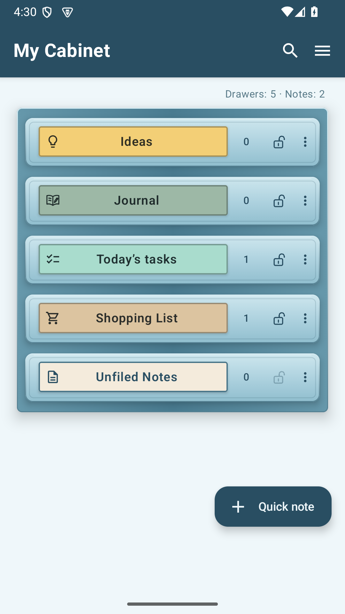
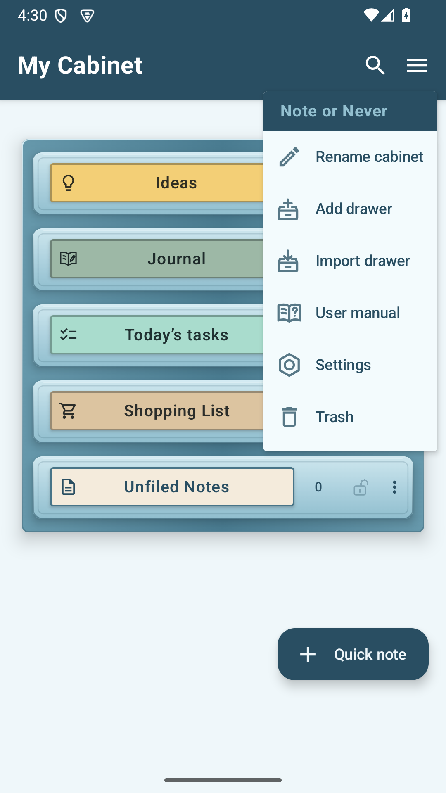
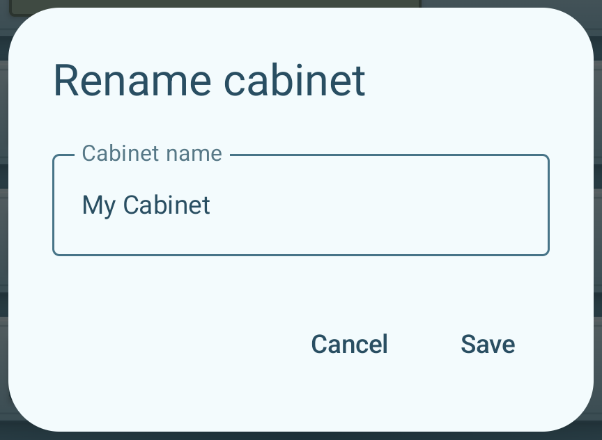
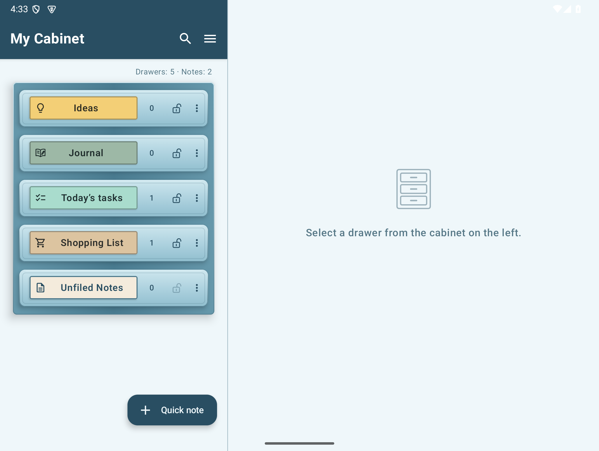
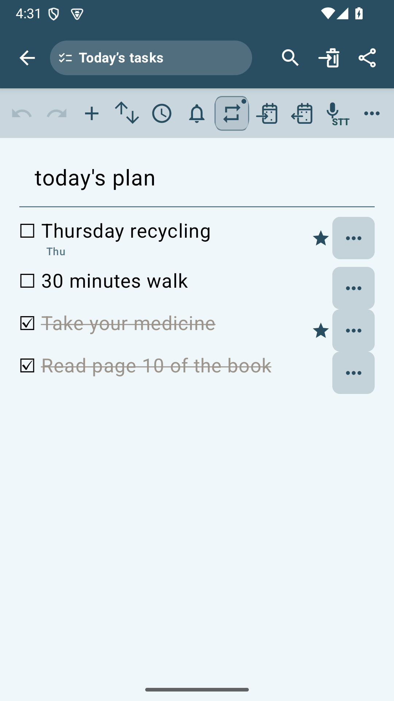
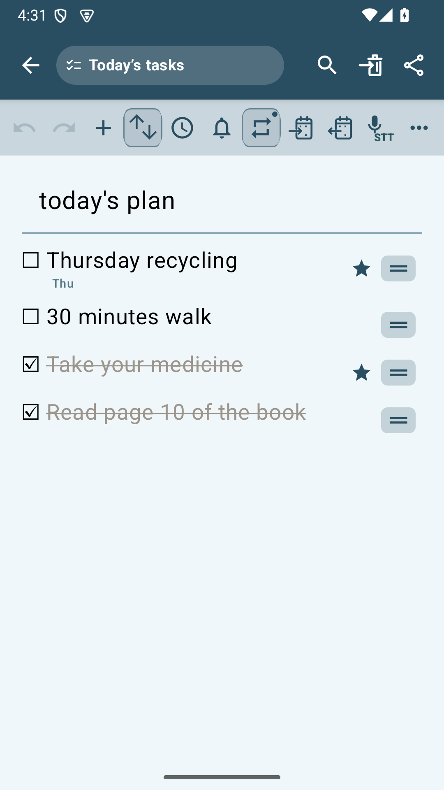
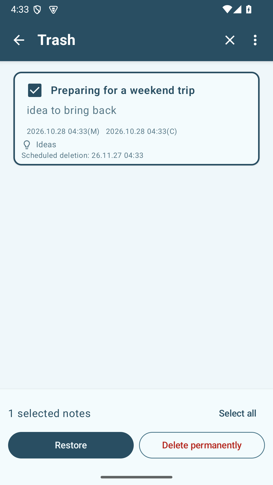
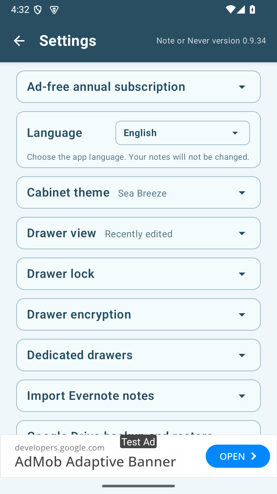

Note or Never User Manual
Version 0.9.34
Write down your thoughts as notes, your plans for the day as to-dos, and your grocery shopping as a list. You can review this manual at any time by going to “User Manual” in the three-line menu (☰) of the chest of drawers.
1. First use and screen configuration
Note or Never is an app that collects notes in drawers by topic. When you tap the drawer, a list of notes opens, and when you tap a memo, a screen for writing the contents opens.


The lock indicates the drawer's locked status, and the red shield indicates whether encryption is in effect. Locked drawers are indicated by a padlock filled with the theme color, and open drawers are indicated by an open lock with only an outline.
Cabinet tools
To the right of the dresser name, Find All and the dresser three-line menu (☰) are displayed. At the top of the menu, you can see the name of the theme-colored app, and under it, you can see Edit Drawer Name, Add Drawer, Import Drawer, User Manual, Settings, and Recycle Bin in that order. The user manual is located just above the settings, which are indicated by a hex nut icon.
On phones in landscape and nearly square unfolded foldable screens, the cabinet on the left and content on the right use a 45:55 split. Wider Fold Wide and tablet screens keep the existing 38:62 split. Ads sit at the bottom of the right content area and are hidden while editing.
General and dedicated drawers
Ideas, Unfiled Notes, and drawers added with the New drawer tool are general drawers for ordinary notes. Journal, Today's Tasks, and Shopping List are dedicated drawers designed for their respective purposes.
Ordinary notes can be moved to another general drawer. Notes in dedicated drawers cannot be moved to other drawers.
Create your first note
To start writing directly from the cabinet screen, tap ＋ Quick note below the cabinet. The note starts in Unfiled, and you can choose its destination drawer by tapping the drawer name in the note header.
To create a note in a particular drawer, open an existing drawer and tap ＋ New note. If you need a new drawer, follow these steps.
- Expand the tools with the arrow (‹) to the left of the drawer and press
 New drawer.
New drawer. - Enter the drawer name and press Create.
- Open the drawer you created and press ＋ New note.
- Write the title and body. Your input will be automatically saved. You can use Back to go back to the list and reopen your notes.

Which drawer should I use?
| Drawer | use |
|---|---|
| regular drawer | We collect articles, photos, pictures, and files by topic, such as ideas, travel, and work. |
| Journal | Keep notes by date and read them back on a calendar or log list. |
| Today's Tasks | Manage to-do tasks by date, time, notifications, repetition schedule, and completion status. |
| Shopping List | Manage items, quantity, and purchase status for each grocery item. |
| Unfiled Notes | Gather any notes you haven't yet decided on a drawer for. |
Rename chest of drawers
Tap the chest of drawers menu (☰) → Edit chest of drawers name. Rename and save.

Wide screen and full screen
On a tablet or unfolded foldable, when you select a drawer from the left drawer, a list of notes will appear on the right. When you open a note, you can see the list and editing screen side by side. Use the full screen button in the header to expand the editing area, and use the zoom out button to return to the two-space screen.

2. Managing drawers
When creating a drawer, you can choose its name, label color, and icon. You can also change an existing drawer using its drawer settings.
Changing drawer settings
- On the cabinet screen, tap More (…) on the right of the drawer you want to change.
- Select Drawer settings.
- Change the drawer name, choose a color circle on the Label color tab, and choose an icon on the Drawer icon tab.
- Check the preview at the top, then tap Save.
The label shows the selected icon and drawer name together. Long names scroll within the name area.


More (…) for Unfiled Notes opens drawer settings directly. To learn how to encrypt a drawer, see the drawer encryption guide.
Change drawer order
Press and hold the drawer and drag it up or down to the desired location. The location of unclassified notes is fixed.
Delete a drawer
Select More → Delete drawer and check the instructions. Notes and attachments from that drawer are moved to the Recycle Bin. Encrypted drawers are deleted after authentication and maintain encryption protection even in the Recycle Bin.
Recreate a dedicated drawer
Diary, To Do Today, and Shopping List maintain their exclusive functions even if you change the name or icon. Deleted dedicated drawers can be created in Settings → Dedicated Drawer. Old notes will not automatically return to the newly created dedicated drawer.
↑ To table of contents3. Write and edit notes
New notes and auto-save
＋ New note in drawer creates a note in the current drawer. ＋ Quick memo starts from an unclassified memo, and before saving for the first time, you can select the drawer to save by pressing the drawer name in the header and confirm with the selection button. When you select today's to-do or shopping list, it changes into a list format that matches that drawer.
Any changes you enter will be automatically saved without a save button. You can reopen what you wrote by going back to the list. When you close a new or existing memo, it waits for saving and sorting to take place and then moves to a visible location. If you sort by edit order, the note you just edited will appear at the top of the list. Just close the new memo without entering anything. To get rid of the Deleting the title or body of an already saved memo is editing the content. note itself, move it to the trash can. If a save failure message appears, check the information and try again.
View and sort by drawer
Select See more (⋮) → Drawer view in the note list header of the drawer. In More, there are also drawer settings and drawer export, and search by date is added to the diary. Exporting a drawer targets all notes and attachments in that drawer, regardless of search results or selection status. The existing management menus for each drawer in the dresser are still available. Select the note sorting criteria, always show important notes first, and show only titles as appropriate for this drawer. Changes made here will not affect other drawers or overall settings.
Items without a separate choice Use default from settings. To reset an overridden item, tap the same label. Set the defaults in Settings → Drawer view. Turn off Show titles only to restore body and attachment previews and dates. This changes the display only; your notes stay intact.
Mark important notes
If you press the star (☆) on the note, it will change to a filled star (★). Press again to turn it off. You can set important notes to be displayed first in Settings → Drawer view, or select them separately in the drawer view for each drawer. The date title of today's to-do notes does not display a note star. A star after a list item indicates the importance of that task or item.
Move to another drawer
- Open a regular note and press the move icon next to the drawer name in the header.
- Select the regular drawer you want to move and press the move button. Select alone doesn't move, and canceling keeps the current drawer. Confirm when prompted to lock or remove protection.
Notes in Today's To-Do, Shopping List, and Diary cannot be moved directly to another drawer, and the move icon is not displayed. For information on how to move multiple notes at once, see Select multiple notes.
Note editing toolbar icon guide
Below is the toolbar for general notes. Light icons are currently unavailable. For font formatting, first select the text to be changed and then apply it. Dedicated tools for today's to-do/shopping list are explained in Chapter 6 and Chapter 8.
Top toolbar: Undo, Attach, Voice
| icon | name | What you do |
|---|---|---|
 | Undo | Restores the text, attachment location, and attachment movement to another memo that were changed during the current edit to their previous state. If there is nothing to revert, it will be displayed in light color. |
 | Redo | Reapplies the reverted body changes. If there is nothing to reapply, it will be displayed in light color. |
 | camera | Take a new photo and attach it to the memo. |
 | Photos | Select and attach a photo from your phone. |
 | Drawing | Draw a picture on a white canvas and put it in a note. |
 | Paste | Insert photos, pictures, recordings, and general files cut from the same memo at the current cursor position. It is only enabled when there is a cut attachment, and will be disabled again when pasted. |
 | Attach File | Select a file and attach it to the note. If you tap the attached file, you can open it with a supported app. |
 | voice input | Enter what you said in letters. It is placed in the title or text at the position where the voice input started, and replaces the selected character if there is one. |
 | Record attached | Record your voice or sound and attach it as an audio file. Unlike STT, it is not converted to letters. |
Bottom toolbar: Font format, list, date
| icon | name | What you do |
|---|---|---|
 | Bold | Displays selected text in bold. Press again to turn bold display off. |
| tip | Tilts the selected text. Press again to turn it off. | |
| underscore | Underlines the selected letters. Press again to turn it off. | |
 | Highlight | Adds a yellow background behind the selected text to emphasize it. |
 | Font size | Open the Font Size menu and decrease it to A− or increase it to A+. First select the character you want to change. |
 | font color | Select the font color from black, red, or blue. |
 | Line spacing | Increase or decrease line spacing in the body text. This is different from the function to change font size. |
 | Checkbox list | Turns the current line into a check list or unformats the check list. You can mark completion by clicking the checkbox. |
 | bullet list | Replaces the current line with a list starting with a dot. |
 | Numbered list | Replaces the current line with a list of numbers. The numbers for the next item continue automatically. |
 | timestamp | Inserts the current date and time at the cursor position in the text. |
When you place the cursor on the title, the text formatting toolbar is hidden, and it reappears when you click on the text. If your screen is narrow, you can slide the toolbar left or right to view other tools. In full screen, you can slide the toolbar on either side up or down.
Only one format among checkbox, bullet, or number list is applied to one line. The format changes when you press a different list button. When you press Enter in a number list, the next number continues, and when you press Enter on an empty item, the list ends. Restrictions on the title, body, and attachments can be checked at Capacity and length limitations.
↑ To table of contents4. Attach and share photos, pictures, and files
Insert photos, recordings, and files
From the top toolbar of a general memo, select Camera, Photo, Paint, Attach File, Attach Recording. Allow the necessary device permissions and take a picture or select a file. Please refer to Note editing toolbar information for the functions of each tool and the differences in voice input/recording attachment.
Change attachment location within the same note
Change the position by clicking More (…) in the upper right corner of the photo → Move up or move down. You can also long-press the photo and drag it up or down. The line shown is where you will place it, and it will scroll automatically when you drag it to the edge of the screen. While currently editing, you can revert the move with Undo.
Photos, pictures, recordings, general files… Pressing Cut in the menu takes it out of the note and places it in the app's buffer. It will remain even if you close the note or quit the app. Click the location where you want to paste and click Paste on the top toolbar. If the save is successful, the buffer is emptied. If you truncate another attachment, it permanently deletes the existing attachment A and confirms that you want to truncate B. If you cancel, A will remain in the buffer and B will remain in the original note. If replacement fails, keep A. Regular cut and paste can be undone and redone during current editing. Buffer replacement, which permanently deletes existing attachments, is irreversible and resets edit history.
Only one attachment can wait to be pasted at a time. While one is waiting, Cut is disabled in every other attachment menu. After pasting, Paste becomes disabled and Cut is available again. This moves the existing attachment without making a copy. You can undo and redo cutting and pasting. If you close the note before pasting, the cut attachment is deleted.
Move attachment to another note
- Photos, pictures, recordings, and general files to be moved… In the menu, tap Move to another note.
- Select the regular drawer that contains the note you want to receive. Unlock or decrypt if necessary.
- Select the note you want to receive and press Go. You can also find the title of a note by searching.
Move one attachment at a time. It is removed from the original note and added at the end of the destination note. Dedicated drawers, including Diary, Today’s Tasks, Shopping List and Backup, cannot be a source or destination. When moving from an encrypted drawer to an unencrypted one, review the notice about the change in protection. If you cancel the move or authentication, the attachment stays in the original note.
While the original note remains open, use Undo in the top toolbar to restore the attachment to its original position. Use Redo to move it again. Earlier edits remain in the undo history. Unlocking or encryption authentication may be requested again. If you cancel authentication or the operation fails, neither note is changed and you can try again later. Closing the note clears the undo history for that editing session.
View larger photo
Click on a photo or picture to open it larger. Use two fingers to zoom in or out, or double tap to zoom in. To change direction or draw, tap Modify to open Paint. It won't change the original gallery on your phone.
Drawing and Marking Photos
- A blank drawing starts with Paint in the top toolbar. To display it over a photo, open it larger and tap Edit.
- The toolbar includes Undo, Redo, Pen, Color Selection, Eraser, Thickness, Rotate Left, and Rotate Right in that order. If your screen is narrow, you can slide the toolbar left or right to view other tools.
- Select a basic color from the color selection or adjust the hue, saturation, and brightness. When you press the thickness button, you can choose from five sizes indicated by lines and circles. The pen and eraser display a border around the selected tool.
- The eraser only erases the lines drawn in this edit, preserving the photo below. Old strokes that have been added to an already saved image cannot be erased separately.
- Rotate the picture and line together by 90 degrees with the rotation button at the end of the toolbar. You can restore lines and rotations with Undo/Redo.
- The blank picture will be added to your note when you press Done. If you edited an existing photo, tap Save and choose Save as a copy or Replace the original. You can choose whether your changes will be discarded when you cancel or close.
Save a copy adds the edited image immediately after the original and keeps the original. When there are 30 photos or 50 attachments in total, saving a copy is disabled and the reason is shown. You can still replace an existing image.
After confirmation, Replace original replaces the existing attachment in the memo with the modified image. You cannot revert to the image before overwriting, so select Save as a copy if you want to keep the original. The strokes are merged in the saved image. The resolution may decrease during the editing/rotating and saving process, so keep the high-resolution original separately.
You can also view the read-only manual and photos from past diaries in larger format. The magnified screen in the read-only state only displays a close button.
Share as PDF
- Open a note and press the Share button in the header.
- In the Android sharing window, select the desired app and recipient, such as KakaoTalk.
Send the title, body, text format, photos, and pictures as a PDF. Recipients can read it without Note or Never. Recorded and general files only display the name and type, and the original file is not included in the PDF. If you close the sharing window, it won't be sent. The sent PDF is a copy at the time of sharing and does not reflect any subsequent edits to the note.
↑ To table of contents5. Keep a diary
Continue today's record
When you open the diary drawer, you will see a list of existing diaries. If you don't have a diary for today, write it as ＋ Today's diary below, and if it already exists, open it as Today's diary continuation. The date is displayed automatically and a short title can be written separately. The first time you enter information, it is saved, and blank notes are not created for days when you did not record anything.
Reading and editing past records
Tap the diary in the list or select the day with the record from More (⋮) at the top of the diary drawer → Search by date. In the drawer view of More, set the sorting and display method. There is no calendar/list icon on the diary editing screen, and you can return to the list by pressing Back. Past records are read-only, but you can zoom in on photos, mark them as important, share them, and move them to the trash.
When you press Unlock Edit, we'll guide you through what it means to preserve that day's records. No keeps it read-only, and Edit allows editing of the currently open record. If I close it and reopen it, it goes back to read-only. Even after midnight, the records you have already written can be saved until you close the screen.
Diaries do not move directly to other drawers. Even if you restore it from the Recycle Bin, it will retain its history date. For renaming and recreating drawers, see Managing drawers.
↑ To table of contents6. Today’s tasks, time, notification, and repetition settings
Write down tasks for today and tomorrow
Check the list by date in the Today's To Do drawer. If you don't have a list for today, you'll see the ＋ To Do Today button, and if you only have a list for today, you'll see the ＋ To Do Tomorrow button. If you have both Today and Tomorrow lists, hide the Create button. Open an existing list by clicking on it. Blank notes that are opened and closed without content are not considered as part of the created list. Use one list per date.


Important to-do items are marked with a star next to them with no background. With background… Pressing the button opens the settings for that item.
Add/done/mark item as important
- Add item (+): Add a new task. You can also write the item name and press Enter to continue the next item.
- checkbox: Changes completed and incomplete. Completed items will have a strikethrough.
- See more items on the right (…): Open Time Settings·Notification Settings·Repeat Settings·Priority Marks·Delete Items.
- Star note: Turns highlighting on or off in the item menu. Important items are marked with stars.
- Delete item: Normal item only clears one selected line. For recurring items, select Delete this item only or Stop repeating from this day. Items deleted this time will not be created again on that date. Abort Recurrence removes incomplete items from the selected date and stops future creation, while retaining past history and completed items. Even if you move the entire date memo to the trash can, the repeat setting will be maintained. Distinguish it from the trash can button in the header, which deletes the entire note.
To set it with the top tool, first place the cursor by clicking on the letter of the item to be changed. The clock, bell, and repeat buttons apply to the current item. Tools that are not available are grayed out. The spacing of the top tools is adjusted according to the screen width.
Reorder items
Turn on Movement mode for items with overlapping up and down arrows at the top. Press and hold the movement handle that appears next to the item and drag it up or down. When you're done moving, press the same button again to return to writing mode.

Set a scheduled time
- To the right of the item... → Press Set time. Alternatively, hover your cursor over an item and press the top clock button.
- Set a time and confirm. The item will display the scheduled time.
- To get rid of it, open Time Settings again and tap No time.
Just setting a time doesn't trigger a notification. If you want notifications, set them separately.


Get notifications
- To the right of the item... → Press Reminder settings.
- If you have a scheduled time, select notifications on the hour, 10 minutes before, or 30 minutes before. If you do not have a scheduled time or would like to receive it at a separate time, use Choose reminder time.
- Save. If your device asks for notification permission, grant it. When you receive the correct notification permission instructions, check the device settings as well.
The selected time point is displayed in the circle on the left. The required permissions and notification actions are described below the selection list. To turn it off, select No reminder. If you remove a scheduled time, notifications based on that time will also be disabled. The notification time you specify is managed separately. Notifications set for a recurring item will also apply to future repetitions.
Notifications display confirmation instructions instead of to-do content. Arrival may be delayed depending on your device’s notification and power saving settings. Calendar event notifications and app notifications are separate, so please also check Chapter 7.
What happens to incomplete items?
Incomplete items with no repeats are carried forward to the next date of the list; completed items are not carried forward. If the Next Date list already exists, it will be merged. A record of the original date is also kept.
Create repeatable tasks
- Write the item name and … → Press Repeat task.
- Choose from Select daily, weekday, weekend, day of the week. In day selection, you can select multiple days of the week.
- Press Save. You can change the item's settings by reopening them.

For example, if you only select Thursday, you will have a new unfinished item every Thursday. Repeat regardless of whether it was completed last time.
- Check completion is the completion mark for the day. Afterwards, the iteration continues.
- Change name, day of the week, and important marks reflects incomplete recurring items after today. Maintain past records and completed items.
- Do not repeat or delete items aborts future iterations and also removes pre-created future incomplete iteration entries.
- When you open the app a few days later, it's supplemented with what you need for today. It doesn't create a list of all past dates with only repetitions.
Recurring items are not carried over to the next day like regular, unfinished items. Separately created recurring schedules with the same name are managed separately. Items linked to a calendar cannot be changed to recurring tasks.
↑ To table of contents7. Connect with your phone calendar
Uses calendars connected to your phone. Calendar access permission is required; select a calendar shown in the list. Direct integration with other calendar apps is not provided.
| function | What do you do? |
|---|---|
| Add to calendar | Send Note or Never's tasks to your calendar schedule. Future updates will change the calendar schedule. |
| Import from calendar | Import today's events from your calendar into Today's Tasks. Subsequent updates on the calendar will replace the entry in Note or Never. |
Registering to-do tasks in the calendar
- Place your cursor on the item you want to send in Today or Tomorrow's To Do and tap the Post to Calendar icon with an arrow at the top.
- Check and register the calendar, date, all-day availability, start and end time, and notifications.
- After editing a to-do, updating it from the same button will change the existing connected schedule.
A link indicator appears on registered items. Recurring tasks cannot be sent to the calendar. Even if you complete, delete, or move a to-do to the next day, already registered calendar events are maintained. To delete calendar events, use the calendar app.
Get today's events from your calendar
- Open your to-do list for today's date and tap Import icon with a calendar and a left arrow in the top toolbar. The spacing of the top tools is adjusted according to the screen width.
- Select a calendar and check and import the necessary items from today's schedule.
- To bring back the latest content, hover your cursor over the item and tap the calendar icon at the top. Check the title, time, location, and calendar of the preview, then press Update on the calendar.
You can check the title, time, location, and calendar information of the imported schedule. The time is displayed separately from the title, and all-day events are displayed as all day. Already connected schedules will not be imported as duplicates. Recurring events in the calendar only retrieve today's episode. Completion checks are managed only by Note or Never.
↑ To table of contents8. Use a shopping list
- Create a new note in the shopping list drawer and name the grocery item.
- Enter the name of the item and press the quantity (×number) after the item.
- Set the quantity using the −·＋ buttons or entering numbers. The default is 1 and input from 1 to 9999.
- Once you have purchased the item, click the checkbox in front of it. Please put a star on items you must buy.
You can create multiple lists for each grocery item. For information on adding items and moving modes, see Add items · Reorder items. Quantity, star, and delete buttons are available directly behind shopping items. Shopping lists do not have a repeat setting. For instructions on using the widget, please refer to Using home screen widgets.
↑ To table of contents9. Using home screen widgets
Add widget
- Press and hold an empty area of your phone's home screen.
- From the widget menu, select Note or Never's Today's To Do or Shopping List.
- Place it on your home screen, then press and hold to resize it if necessary. Additional methods may vary depending on the manufacturer and home screen app.
What you can do in widgets
- When you press the item line, it changes between completed/incomplete or purchased/unpurchased.
- ＋ opens the app's quick add screen to put items in that list.
- Tap a title or open a note to open that note in the app.
- The asterisk/repeat icon is for display purposes only. Important marking, repetition, quantity, and order changes are done in the app.
The Today's Tasks widget shows the list for today's date, and the Shopping widget shows the most recently modified active list. The remaining count is the number of incomplete items and is not the total of the item quantity.
display order
The order is Incomplete Important → Incomplete General → Completed Important → Complete General. Maintains the original order of items within the same bundle. Widget sorting does not change the order within the note.
Widget for locked drawer
When you lock a drawer, the widget hides its contents. Even if you authenticate with the app and open it briefly, the widget remains hidden. Open the app to check the contents, or unlock the drawer to display it again in the widget. Date processing for recurring items continues during locking.
↑ To table of contents10. Finding notes and managing the Recycle Bin
search range
| Find button location | What to look for |
|---|---|
| chiffonier | Names of multiple drawers and memo title/body |
| Inside the drawer | Title and body of the note in the current drawer |
| In the note | Matches characters from the body of the current note |
Tap the magnifying glass in the drawer, enter a search term, and tap the drawer or note in the results. Inside the dark circle on the right side of the input window deletes the entered search term at once. If you go back on the search screen to the drawer and open search again, you will start anew with an empty search window.
Open a note from the search results and go back to return to the same search term and list position. If you open a drawer first and then a note, Back takes you through note → drawer → search results. On a wide screen, opening a note directly keeps the search results on the left. Folding or unfolding the screen preserves your search and return path.
In the drawer, only notes with search terms remain in the list. Even if you open and return to the searched memo, the search results are maintained. If you press Back in the drawer again, the search will end and the entire list will appear. Within the note, matching letters are highlighted and the content remains unchanged. Close search in drawers and note headers X closes that find. To find the manual, please refer to Using the manual.
Locked drawers are excluded from the default search target. Search for locked drawer contents You can include them by authenticating by clicking Include (requires authentication). Encrypted content is also searched after authentication. Even if you open and return to notes or drawers in search results, the authenticated search range is maintained. When you leave browsing or auto-lock is applied, this scope of authentication ends and you must authenticate again to retrieve locked content.
Select multiple notes
- Press the Select button (checkmark) in the drawer's header.
- Select the note you want to process from the list.
- Tap Move Drawer or Move to Trash at the bottom. When moving a drawer, select the destination and confirm it with the move button. Only regular notes that can be moved can be moved to another drawer.
If you see Undo in the instructions below after the action, you can tap it to revert the action you just took. The default display time is approximately 5 seconds and can be longer depending on your accessibility settings. Press Back to finalize your selection.

Move a note to the trash can
Press the Move to Trash button in the edit note header and confirm. The button is disabled for empty notes without title, body, or attachments. An X after an item deletes a single line, and the trash can in the memo header deletes the entire memo.
Restore from Recycle Bin
Below each note, the original drawer and scheduled deletion date and time are displayed on the left, and restoration and permanent deletion are displayed on the right. Deletion is scheduled for 30 days from the time it is moved to the Recycle Bin, and actual cleanup may be delayed depending on the device's condition. The date and time are displayed in a concise 24-hour clock, such as 26.11.26 13:14, and the restore and permanent delete buttons are placed horizontally.
You can select multiple notes by pressing the selection button in the trash can header. Check the number of selections and total selections at the bottom and then restore or permanently delete them. Permanent deletion is confirmed after checking the number of selections. Notes that are hidden or locked will not be selected in the search results. Going back ends the selection first.
In the Recycle Bin menu (⋮), View appears first, and Empty Recycle Bin is displayed in red below it. Choose to view by drawer, by scheduled deletion (from the nearest date), or by reverse scheduled deletion (from the distant date). The default is the reverse order of deletion, with notes recently placed in the Recycle Bin showing first. The Show Title Only switch at the bottom of the view applies only to the Recycle Bin and does not affect the settings or view of each drawer. Hides the preview of the text and attachments, and maintains the original drawer, scheduled deletion, and restoration/permanent deletion.
If you turn on selection mode after searching in the Recycle Bin, the search bar and Find button will be hidden for a moment and only the Deselect X will be displayed. Your search term and search results will remain the same, so you can select only the notes you find. If you deselect it, the search box will reappear with your existing search terms.

- Tap the drawer menu (☰) → Trash Can.
- On the left side of the line with the Restore/Permanent Delete buttons for the note card, check the icon and name of the original drawer. Press Restore of the note you want to revive. If necessary, open the note first to check its contents.
- Check the restored notes in the original belonging drawer. If the diary drawer has been deleted, it will recreate the diary drawer and restore only the selected diaries. The rest of the diary will remain in the trash can. If other regular drawers are missing, restore them to Uncategorized Notes. Encrypted notes are restored while remaining protected after authentication.
To view locked drawer notes, authenticate with Include locked drawer notes (authentication required) above. 30 days after moving to the Recycle Bin, it will be automatically and permanently deleted along with any attachments. Depending on the condition of the device, cleanup may be delayed. If you restore it before 30 days, it will be excluded from cleanup, and if you move it back to the Recycle Bin, it will be counted again from then on.
↑ To table of contents11. Lock and encrypt drawers
| Protection method | difference |
|---|---|
| Drawer lock | Prevents users from opening content in apps using fingerprint or 4-digit PIN authentication. |
| Drawer encryption | The title, body, and attachments of the memo are encrypted and stored, and the data remains encrypted even in backups and the recycle bin. |
Encryption is not applied to the backup drawer that holds today's to-do list, shopping list, uncategorized memos, and other app data. Store important personal records in a regular drawer that can be encrypted. You can use the default lock for today's to-do and shopping lists.
basic drawer lock
Under Settings → Drawer lock, set a PIN, fingerprint access and the automatic lock delay after switching away from the app. Tap an open padlock to lock a drawer; tap a locked drawer and authenticate to open it. For widget behavior, see Using home screen widgets.
Setting up encryption for the first time
- For the general drawer you want to protect, tap More → Encrypt drawer.
- Enter your encryption password twice (at least 12 characters long) and tap Set Password. This password is different from the 4-digit lock PIN.
- Store the displayed recovery key in a safe place outside of the app, such as on paper or in a password manager.
- Check Confirm Storage and click Set Password to complete.
- When prompted that this drawer is not yet encrypted, click Enable encryption to apply.
Authenticate and apply protection for each other drawer in More → Drawer Encryption. The encryption drawers use the same password, so use the password and recovery key you initially set. If you cancel before completing setup, do not use the recovery key you saw then.
Shield badge and lock sign
The Red shield, white check badge in the upper right corner of the drawer label and the title label inside the drawer indicates that encryption has been applied to that drawer. Even if you authenticate and open the content, the badge will not disappear because encryption is maintained. A lock means a drawer that must be opened after authentication, and a shield means that data is encrypted and stored.
Normal drawer opening and automatic locking
Tap the encrypted drawer and authenticate with your associated fingerprint or encryption password. Even if you open and close the notes in that drawer, they remain visible. It will re-lock when you return to the drawer, select a different drawer, or turn off the screen, and will follow the auto-lock settings if you move to another app. Switching the screen by folding or unfolding the phone is an action to continue writing what you are writing.
Connect fingerprint and change password
In the Drawer encryption card in Settings, choose the option to connect or reconnect this phone’s fingerprint, or to change the password, then authenticate. Fingerprint linking applies only to this phone. If fingerprint or device security changes make it unavailable, open the drawer with your password and link it again.
Password changes apply to every encrypted drawer. Backups made before the change still require the password used when they were created. Make a new backup after changing your password.
When you forget your password
- Tap Forgot your password? on the authentication screen.
- Enter your saved recovery key and new password, reset your password, and press Open.
The new password applies to all encrypted drawers. Cancel returns to the authentication screen. The app does not show the recovery key again, so record it accurately during the initial setup.
Remove encryption protection and delete drawer
In the drawer, go to More → Decrypt drawer, authenticate, check the drawer name, and press Unprotect. The data in the selected drawer will be stored unencrypted. If you cancel, you will retain your protection. Deleting a drawer is separate from removing protection. Notes and attachments in the Recycle Bin remain encrypted even if you delete the encryption drawer.
Check protection coverage
- The drawer name, number of notes, creation and modification dates, and attachment type are not encrypted. Do not include sensitive content in the drawer name.
- This is not a feature that encrypts the entire backup. Only the contents of the encrypted drawer are protected; regular drawers and today's to-do/shopping list are not encrypted.
- Backups made before encryption or copies sent to external apps are not automatically encrypted. Manage externally shared files yourself.
12. Backup/Restore and Import Evernote
Sync Status and Exit Encryption Drawer
Sync Now in Settings targets both regular notes and the entire encryption drawer. If there is no encryption drawer, proceed without separate encryption authentication. If you have an encryption drawer, authenticate first with your existing password or connected fingerprint. If you cancel authentication, full synchronization will not start and only regular data will not be transferred separately. Authentication for this synchronization will end once processing is complete.
If you open and edit a note during synchronization, application will be held. When the note is closed and saved, it automatically retries by rereading the latest content and does not repeatedly display a warning that the content has changed during saving. Re-locked encrypted drawers are processed after unlocking and do not bypass protection checks.
Temporary disconnections, timeouts, and server errors are automatically retried at intervals of 5, 10, 20, 40 seconds, and up to 60 seconds thereafter. While editing, close the note and wait for it to finish saving. When the Internet connection is restored, pending requests will be processed again. Login expiration, permission issues, and save failures must be resolved for the cause and will not be hidden by automatic repetition.
Complete transfer of the note card to Drive means that the current contents are reflected in Drive. Click on the sign to see instructions. This does not mean that subsequent changes have been confirmed on other devices. The other device change confirmation time above the drawer list is the last time remote changes to that drawer were actually confirmed and reflected.
While auto-sync is paused, changes are kept on this device. After resuming automatic synchronization, open the corresponding encryption drawer to authenticate and the transfer will be attempted again.
If you click Cancel during synchronization, any changes already reflected will be kept and any remaining changes will be kept on this device. Even after general data processing is completed, if an error occurs in the encrypted data, it is not marked as complete.
If there are changes that are not reflected when you leave the encryption drawer while synchronization is in use, the Exit Drawer window after synchronization is displayed. Once complete, navigate to the screen you originally selected and exit the drawer's authentication scope. If you choose to leave without waiting, unsent changes will be retried after the next authentication. If the connection fails or the wait is long, you can choose to Retry or Leave. When you send an app to the background, existing auto-lock rules take precedence. The search maintains the scope that you authenticated with, and the behavior of returning to the search results remains the same.
Recover from sync without backup
Select Settings → Google Drive → Recover from Sync. Even if you do not have encryption recovery information, you can retrieve general data sent to Drive by selecting General Data Recovery. To recover encrypted data, you will need encryption recovery information and password. Connect to the same Google Account, select the encryption material you want to recover, and enter your existing encryption password. Import regular and encrypted notes and attachments sent to Drive. If it overlaps with existing data or is using a different encryption key, it will abort rather than overwrite.
To use this feature, you must synchronize the encryption drawer from your old device to the new version, including the encryption drawer, and ensure that the encryption key recovery information is stored in Drive. If you delete the app while only waiting for transfer, it may not be restored. Password changes must also be updated in Drive before you can recover them with a new password. If synchronization is paused or there is no connection, updates will be queued.
It will not recover any untransferred changes, app settings, or fingerprint connections. Initially, notes will not be sent as new changes; existing sync material will be retrieved first. This receive priority status is maintained even after recovery is interrupted. If you haven't previously uploaded encryption recovery information and you've lost both your device and its backups, you won't be able to regenerate your keys with just your password. Keep independent backups as well.
Backup and restore to local files
- Open Local Backup and Restore at the bottom of Settings.
- Tap Save Backup File and select a folder and file name to save in the Files app. .nonbackup Stores drawer, memo, trash, settings and attached files together in one file.
- Tap Restore from File and select the saved backup file. Check the date, number of drawers, notes, attachments, and replacement instructions.
- Clicking Restore replaces the current data with the backup content. This is not an operation to merge with the current data. If you cancel, it will not apply.
- The state immediately before restoration is stored on the device. You can go back to reverting your last restore.
Local functionality does not require a Google account and internet. In the Files app, select your desired location, such as device storage or SD card. On devices with a PIN set up, proceed after authentication. Restoring the lock drawer requires setting a PIN for this device, and encrypted contents remain encrypted even in backups, so keep your password and recovery information. The contents of other drawers and the drawer names, dates, and numbers are not encrypted. If there is file corruption or verification failure, it will not be restored. It can also read older backups that support it and use the same format as Google Drive.
Google Drive backup is a manual backup
You must link your account in Settings → Google Drive Backup and Restore and tap Back up now to create a new backup. There is no automatic backup or real-time synchronization of content across devices just by linking your account. Requires Google account connection and internet.
Drawer, memo, attachment, repeat settings and notes remaining in the trash can are also included in the backup. After making any major changes and before changing phones, create a new backup and follow the instructions for completing it.
Backup storage and deletion
Once the new backup is successfully uploaded and confirmed, the older backups are automatically and permanently deleted, leaving the most recent five. A failed backup does not erase existing backups. The retention criteria is not the period but the number, so if you back up frequently, all five can be recent.
To erase it manually, open the list with Restore from Backup and press Delete for the backup you want to erase. Once you confirm the file name and permanently delete it, it cannot be restored. Notes on your current phone will not be erased. For long-term backups, store them separately before automatic cleanup.
Restoring from backup
- In Settings, connect the Google Account where you keep your backups.
- Click Restore from Backup and select the date and number of items.
- Confirm the notification that the current notes and drawers will be replaced and press Restore.
- After completion, check whether the drawer, memo, and attachment open normally.
Transfer to a new phone
- Check your encryption password on your old phone and keep your recovery key safe.
- Upload the latest data with a current backup of your existing phone.
- Install the app on your new phone and restore its backup from the same Google account. If you have a regular locking drawer, you'll need to set up a PIN on your new phone first.
- The encryption drawer is opened with the password at the time of backup. Your fingerprint connection from your old phone will not be transferred over, so reconnect it on your new phone.
- After checking the title, text, and attachments, organize your existing phone.
Import Evernote notes
- In the Evernote app on your PC, export the notes or notebooks you want to move to ENEX (.enex). If there is body encryption, disable it first.
- Copy the ENEX file to the download folder on your phone, etc.
- Select a file from Settings → Import Evernote notes → Select ENEX file.
- Check the title and number in the preview and click Import Evernote Note.
- Check and back up the contents and attachments in the memo drawer imported from Evernote.
Get title, body, checkmark, basic format, attachments and creation/modification dates. Tags and original address are displayed at the end of the text. Complex tables or formats may vary and notification, task, and notebook structures will not be automatically converted. Organize necessary notes in another regular drawer.
Duplicates of the same material will be skipped, but materials with changed content or revision date may be added as separate notes. It does not automatically sync with Evernote or overwrite existing notes. The original notes and ENEX files will not be deleted. If the file is large or fails, split it into smaller batches and test them first. The supported format is ENEX and the limit is Capacity and length limitations.
Please select materials that you own or have permission to import. Import is processed within the device, and when you run Google Drive backup, the imported data is also included in the backup. The original ENEX file is not protected by drawer encryption, so take care of your copy as well. This function is not an official partnership/authentication function of Evernote. Evernote® is a trademark of Bending Spoons US Inc..
↑ To table of contents13. Using app settings and manuals
Press Settings on the three-line menu (☰) of the drawer. Represented by a hexagonal nut icon. In Settings, tap the card title to expand or collapse its contents.

app language
Supports Korean, English, Japanese, Hindi, Portuguese (Brazil), Spanish, and Indonesian. Even if you change the language, the content of your notes will not change.
Cabinet theme
Slide the preview card left or right and click on the theme you want. The default theme is Sea Breeze. The default theme has Sea Breeze, Blue Sky, Soft Green, Lavender Mist, Korean Paper, Honeycomb, Black and White, Classic Wood, and the seasonal theme has Spring, Summer, Autumn, Winter, Christmas.

Theme colors are applied to the screen and app icons. The app icon on the home screen will be reflected when you leave the app and turn the screen off and on. Depending on the home screen app, renewal may be delayed. If you previously used Light Oak or Warm Walnut, it will display as Sea Breeze.
Drawer view
Set default values for sorting notes, always showing important notes first, and only showing note titles. If you turn on only view note titles, the drawer list will be concise, allowing you to view more notes on one screen. Items you specify separately in each drawer will remain selected in that drawer.

Dedicated drawers
Manage a backup drawer that receives diary, to-do list, shopping list, and other app data. Clicking on the pencil next to the actual drawer name opens the drawer settings. Deleted dedicated drawers can be recreated using the Create button. Make a regular drawer using the  New drawer tool in the drawer header.
New drawer tool in the drawer header.

Lock/Import/Backup
See Drawer lock, Drawer encryption, Import Evernote notes, Google Drive backup and restore, Local backup and restore for instructions and precautions.
Local backup and restore is at the bottom of Settings.
Backup drawer to receive data from other apps
The Backup drawer receives items sent by other IDEANU apps and is initially hidden. Enable it under Settings → Dedicated drawers to show it below Uncategorized notes, then follow the sending app’s instructions to import items. This drawer is separate from Google Drive and local backups of all Note or Never data.
Read/Find/Share Documentation
In the three-line drawer menu (☰), press User manual just above Settings. You can click the table of contents to go to the desired chapter and return to the link in the table of contents at the end of each chapter. Click on the photo to open it larger, or close it to return to the main text.
The Ad-Free Annual Subscription in Settings is a folded card with only the title visible at first. When you click on the title, subscription information and pricing, subscription, purchase restoration, and management buttons will appear. Click the title again to collapse it.
If you enter a search term from Search in the header, the matches will be highlighted. Move to the result number and the up and down arrows, and close Find with X. share sends the manual as PDF. Explanatory text and screen examples are displayed in the language selected in settings. The same icon images are shared across languages.
When you click on a link in the manual, it remembers the position you were reading just before you moved to it. If you press the curved arrow on the tool to the right of the header, you will go back one by one starting from the most recent position. If there is no history to go back to, the button will be disabled, and the history will be reset when you close and reopen the manual.
On larger screens, you can use the full screen button to expand and read the manual. Zoom out or go back to return to the two-space screen, and go back one more time to return to the drawer. Even on a narrow screen, you can return to the drawer by pressing Back.
Guide text and shared icons are available without an internet connection. When you first open the guide, only the pictures for your selected language are downloaded. Once downloaded, pictures remain available offline, even after reopening the app. If pictures cannot be downloaded, connect to the internet and tap Retry pictures. Sharing a PDF before the download finishes omits any pictures that have not been downloaded.
Each time you open the guide, the app checks for updated pictures. Saved pictures appear first, and new pictures replace them only after downloading and verification finish. If you are offline or an update fails, the saved pictures remain available.
When a feature doesn't work
- If Camera, Voice, Recording, and Calendar do not open, check the app permissions in your device settings.
- If the calendar list is empty, check your account in your phone's calendar app and which calendars you want to display.
- If you do not receive a to-do notification, check the notification permission and power saving settings in your device settings.
- If Google Drive backup fails, check your Internet connection, connection account, and storage space.
- If you can't find the local backup file, check the saved folder and .nonbackup extension in the Files app.
Capacity and length limitations
| item | limits |
|---|---|
| Memo title/body | Title 200 characters, body 30,000 characters. We recommend that you write the text in sections if it is over 10,000 characters. |
| Attached capacity | One file 30MB, one memo attachment total 200MB |
| Number of attachments | A total of 50 notes in one note, including 30 photos. |
| Photo/Picture | Original photo 40 million pixels. Up to 2048 pixels on the long side can be used to edit/rotate and save pictures. |
| Import Evernote | One ENEX is 100 MiB (about 105 MB), 5,000 notes. Title, body, and attachment restrictions also apply to imported notes. |
| Local·Google Drive restoration | Up to 2GiB of backup files. Large backups require more time and storage space. |
If you encounter restrictions, check the instructions to split notes or files. If the recording is longer than 30 minutes, it is recommended to store it separately, and file size limits also apply. Free up space on your phone before backing up, restoring, attaching, or encrypting.
↑ To table of contents